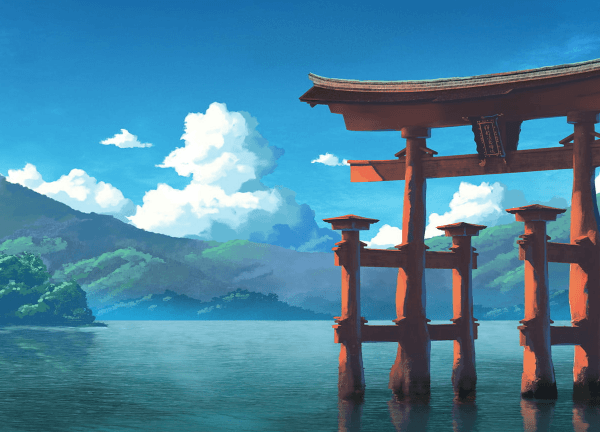

My Biography

My name is Charlie Ken some calls me Kei, CK and Ke. I am a left handed person,
I always love designing and editing especially exploring more about creativity
can find throughout the internet. I am amazed with pixel art because, it's a matter
of nostalgia. But not just. It is the simplicity, the minimalism, the lightness of
he pixels that's so alluring, as well as the way they remind us of our childhood. A
pixel is like a cell in a living organism - it is the most basic structural unit of a digital image
(and hence the name: picture + element = pixel). But in modern technologies and computing today pixel art games
are almost lost its widespread presence, mostly in gaming but it did not die out. Whats fun it is for me, is
that pixel art reminds us of our past about how fun would pixel art games would be how friendly it is to old
computer hardwares.  Since I was young, I was always interested in using computers at the age of 6. I
was always scolded because back then I tend to corrupt the old Windows XP operating system, times went by I became
comfortable into tapping within the OS, I learned how to make my own custom OS from windows XP like adding Aero features
glass effects and transparencies. After a few years in junior High days, I learned how to reformat different PCs and
laptops using pirated softwares and I make it as a personal business. Funny thing is I forced my mother to
open a PISO NET shop beside our store. And for some time, I learned how to tweak the computers intended for light gaming.
Luckily for us when we started Pisonet business we had no problem paying electric bills and internet bills.
Since I was young, I was always interested in using computers at the age of 6. I
was always scolded because back then I tend to corrupt the old Windows XP operating system, times went by I became
comfortable into tapping within the OS, I learned how to make my own custom OS from windows XP like adding Aero features
glass effects and transparencies. After a few years in junior High days, I learned how to reformat different PCs and
laptops using pirated softwares and I make it as a personal business. Funny thing is I forced my mother to
open a PISO NET shop beside our store. And for some time, I learned how to tweak the computers intended for light gaming.
Luckily for us when we started Pisonet business we had no problem paying electric bills and internet bills.
Then the past few years, I became interested in modding videogames in PC I went into pixel art when I accessed modifying
in game textures using texture editors and photoshop. I find it amusing and interesting because you can make realistic
textures through pixels and making pixel art is easy and improves my concept creativity for me.